Saiki
Saiki · Oita
Saiki
Highlighted on the Oita map.
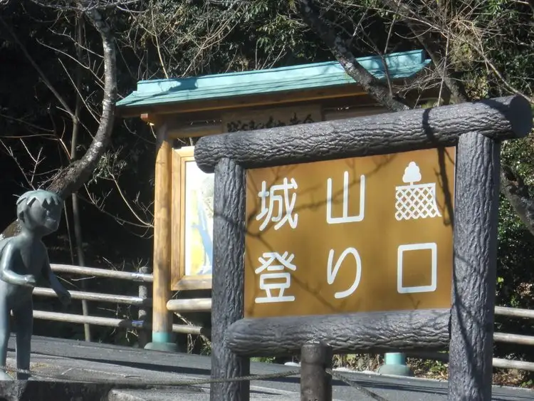
Sights
Fujikawa Nai Gorge (Fujigawachikeikoku) Sobo Kei Okuzure Yunesukoeko Park no Midokoro
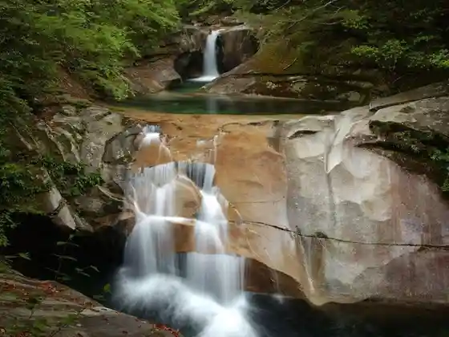
Sobo Kei Okuzure Yunesukoeko Park no Midokoro Yocho Yayama (Takatoriyasan) no Nature Hayashi
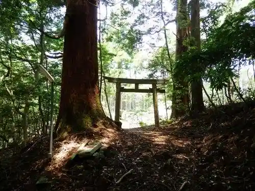
Kyushu Orure Saiki Oiri Shima Kosu

Kyushu Orure
Gosho Myojin Sha to Nagi (Nagi)
Sato no Eki Kiura Meisui Kan (Uta Genka Baths Kiura Meisui Kan)
Ume Kyanpu Village
Oiri Shima Shokusai Kan
Orang Craft Brewery (Orankurafutoburyuwarii)
Saiki Umi no Market
Omizu Kuruma no Sato
Se Kai (Zeai) Beach
San no Maru Yaguramon
Kunikida Doppo Kan (Kunikidadoppokan)
Hotaru Village
Bungo Futamigaura
Kama Tozaki (Kamatozaki) Nature Park
San Tsu Ishi
Mari no Porisu Memorial Park
Taki San Hashira Shrine
Mizu no Ko Shima Lighthouse
Moto no Kan Kaikyo
Tominaga Ichiro Umi no Manga Kan
Wataridori Kan
Tomio Shrine
Experience Koen Kame no Kabuto Naokawa
Naokawa Marugoto Market
Kabutomushifureai Kan
Nogyo History Museum
Naokawa Kei no Mori Park
Ogura Magai Sekito
Ura Dai (Urashiro) Toge no Sakura Namiki
Mizu no Ko Shima Kaiji Museum
Awashima Shrine
Shiosai Village
Takahira Tembo Koen Campground
Akatsuki Arashi (Gyoran) Falls
Fukuju Tsukasa
Konakara (Onagara) Forest Park Campground
Bansho Osakana Kan
Saiki Heiwa Kinen Kan Yawaragi
Saiki Tourist Information
Tsuru Misaki Nature Park
Tan Ga Hodai Enchi
Sora no Park Sora no Viewpoint Tokoro
Totoro no Basu Tei
Roadside Station Ume
Rekishi to Bungaku no Michi
Saiki Sushi no Meiten
Koji no Mori
Fujikawa Uchiyu Topia
Tsuga Mure Yamayama Itadaki
Roadside Station Yayoi
Bansho Kawa River Park
Umi no Museum
Kyu Kokoro Tei (Kyushintei)
Sobo Kei Okuzure Yunesukoeko Park no Midokoro Natsuki Yama (Natsukiyama)
Roadside Station Kamae Buri Laboratory
Amabe Tosei Daigaku
Hai Tateyama
Shioyu
Senzaki Tsutsuji Park
Renko Tera Yusui
Shaku Mayama
Naokawa Kantorii Kurabu
Ontake Shrine
Kurosawa Jizo Mikoto
Hiji Setsu Shrine
Rikuchi Toge
Kan Etsu (Hazako) Coast
Kamae Kazura
Ko Takeshi Ko (Ebuto) Coast
Oji Shrine
Toko Tera
Ise Honsha
Se Hirayama
Kozan Coast
Nami to Tsu (Hatozu) Beach
Choshi Hakkei (Choshihakkei)
Choraku Tera
Todoroki Falls
Hiko Dakeyama Itadaki
Toko Yamadai Nichi Tera to Kikuhime Gyoretsu
Sumiyoshi Goten
Reiun Yama Shiotani Tera
Kami no I
Wakamiya Hachiman Sha
Kurosawa Toko Iori
Omiya Hachiman Sha
Moto Koshiyama Kodachi Tozando
Umaimon Tori
Usu Tsubokawa Shobuen
Shiroyama Tozanguchi
Yocho Ya Shrine
Chugaku Campground
Uta Genka Bridge
Shigeoka Kirishitan Haka
Tsutsu Cha O
Saiki Yakusho
Dining
居食屋 喰いまくり会館
Kyo Shoku Ya Kui Makuri Kaikan
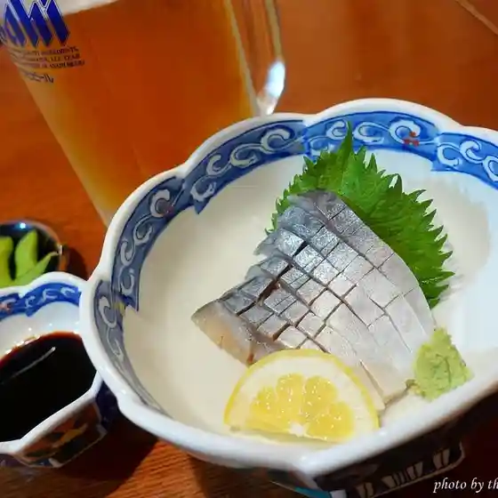
北の綿雪 大分カデンのエトウ店
Kita No Watayuki Ooita Kaden No Etou Mise

ひょっとん
Hyotton
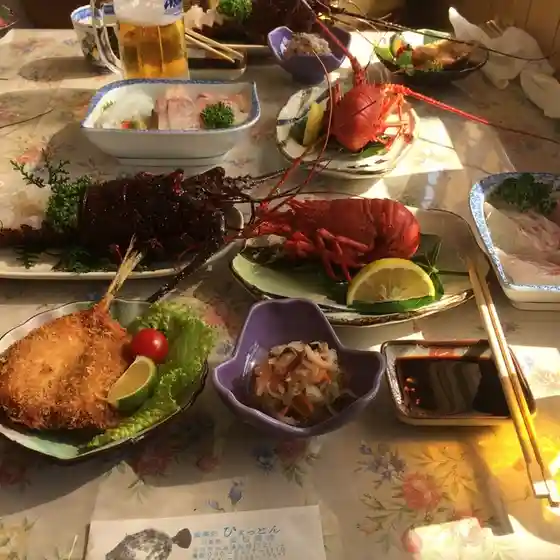
割烹 明月
Kappou Meigetsu

みたらし
Mitarashi
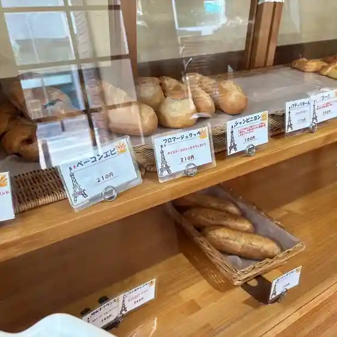
クレープ ティファニー 37
Kureepu Teifanii 37
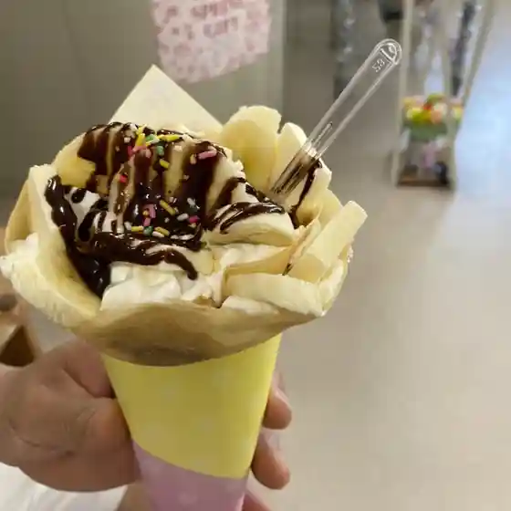
みやこ寿司
Miyako Sushi
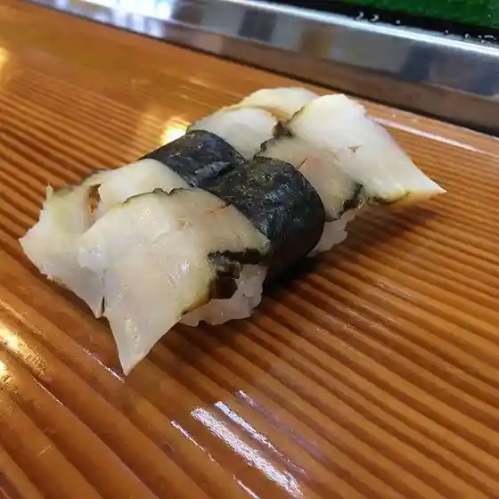
市場食堂 日保丸
Shijou Shokudou Nichi Ho Maru
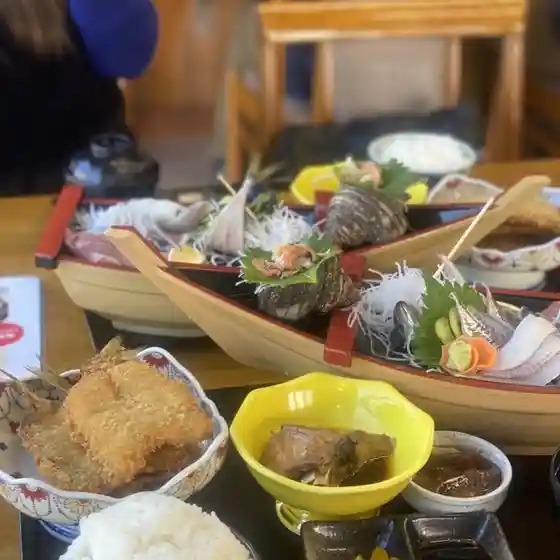
山香園
Yamaga Sono
風
Kaze
からあげ おちあい
Karaage Ochiai
居酒屋八ひろ
Izakaya Hachi Hiro
焼肉太陽
Yakiniku Taiyou
浦の麺屋ごとう
Ura No Men Ya Gotou
とり将軍
Tori Shougun
かまえ食堂 丼どん
Kamae Shokudou Donburi Don
Cafe Rin
Cafe Rin
正栄堂製菓
Shouei Dou Seika
炭焼ステーキジュジュ
Sumiyaki Suteekijuju
こじま
Kojima
味っ子
Ajitsu Ko
LE PIN PARASOL
Le Pin Parasol
カフェ＆ダイニング さいきりーふ
Kafe & Dainingu Saikiriifu
コヨミ
Koyomi
若宮鮮魚店
Wakamiya Sengyoten
茶寮櫓門
Charyou Yaguramon
佐伯地魚 のん喜 葛港店
Saeki Jizakana Non Ki Kuzu Minato Mise
焼肉処炙樂
Yakiniku Tokoro Sha Raku
ティータイム
Teiitaimu
すき家 217号佐伯店
Suki Ie 217 Gou Saeki Mise
お食事処 ひょうたん小路
O Shokuji Tokoro Hyoutan Kouji
居酒屋 やま福
Izakaya Yama Fuku
レストラン花
Resutoran Hana
グラバー亭
Gurabaa Tei
海鮮焼き小屋 きちくりぃ～の
Kaisen Yaki Koya Kichikurii ~ No
魚菜日和
Gyosai Hiyori
ら～めん Risa うまいもん通り店
Ra ~ Men Risa Umaimon Touri Mise
雲心だるま
Kumo Kokoro Daruma
コロッケ倶楽部 佐伯店
Korokke Kurabu Saeki Mise
ふじ笑
Fuji Warai
回
Kai
お食事処めぐみ
O Shokuji Tokoro Megumi
まこと寿し
Makoto Hisashi Shi
乃羅
No Ra
テイクアウト なごみ～や
Teikuauto Nagomi ~ Ya
E-side kitchen はなれ
E-Side Kitchen Hanare
高橋水産
Takahashi Suisan
菓子司 たけばやし
Kashi Tsukasa Takebayashi
日の出フード
Hinode Fuudo
汲心亭
Kyuu Kokoro Tei
らうめん 点法輪
Raumen Ten Hourin
鮮度壱番
Sendo Ichiban
やまとや弁当
Yamatoya Bentou
誉
Yo
さいき海の市場〇
Saiki Umi No Shijou (Maru)
檸檬派
Remon Ha
焼肉井とう
Yakiniku I Tou
佐伯園
Saeki Sono
お菓子のうめだ
O Kashi Noumeda
スイーツカフェ スプーン
Suiitsukafe Supuun
Michi No Eki Ume Rest House Umeria Saiki Oita Prefecture Kyushu
Michi No Eki Ume Rest House Umeria Saiki Oita Prefecture Kyushu
Michi No Eki Ume Rest House Umeria Saiki Oita Prefecture Kyushu
Michi No Eki Ume Rest House Umeria Saiki Oita Prefecture Kyushu
Michi No Eki Ume Rest House Umeria Saiki Oita Prefecture Kyushu
Michi No Eki Ume Rest House Umeria Saiki Oita Prefecture Kyushu
Michi No Eki Ume Rest House Umeria Saiki Oita Prefecture Kyushu
Michi No Eki Ume Rest House Umeria Saiki Oita Prefecture Kyushu
Shioyu Saiki Oita Prefecture Kyushu
Shioyu Saiki Oita Prefecture Kyushu
Shioyu Saiki Oita Prefecture Kyushu
Shioyu Saiki Oita Prefecture Kyushu
Shioyu Saiki Oita Prefecture Kyushu
Shioyu Saiki Oita Prefecture Kyushu
Shioyu Saiki Oita Prefecture Kyushu
Shioyu Saiki Oita Prefecture Kyushu
Fukuzushi Saiki Oita Prefecture Kyushu
Fukuzushi Saiki Oita Prefecture Kyushu
Fukuzushi Saiki Oita Prefecture Kyushu
Fukuzushi Saiki Oita Prefecture Kyushu
Fukuzushi Saiki Oita Prefecture Kyushu
Fukuzushi Saiki Oita Prefecture Kyushu
Fukuzushi Saiki Oita Prefecture Kyushu
Fukuzushi Saiki Oita Prefecture Kyushu
Saiki Seafood Market Maru Saiki Oita Prefecture Kyushu
Saiki Seafood Market Maru Saiki Oita Prefecture Kyushu
Saiki Seafood Market Maru Saiki Oita Prefecture Kyushu
Saiki Seafood Market Maru Saiki Oita Prefecture Kyushu
Saiki Seafood Market Maru Saiki Oita Prefecture Kyushu
Saiki Seafood Market Maru Saiki Oita Prefecture Kyushu
Saiki Seafood Market Maru Saiki Oita Prefecture Kyushu
Saiki Seafood Market Maru Saiki Oita Prefecture Kyushu
Ishokuya Kuimakuri Kaikan Glico Saiki Oita Prefecture Kyushu
Ishokuya Kuimakuri Kaikan Glico Saiki Oita Prefecture Kyushu
Ishokuya Kuimakuri Kaikan Glico Saiki Oita Prefecture Kyushu
Ishokuya Kuimakuri Kaikan Glico Saiki Oita Prefecture Kyushu
Ishokuya Kuimakuri Kaikan Glico Saiki Oita Prefecture Kyushu
Ishokuya Kuimakuri Kaikan Glico Saiki Oita Prefecture Kyushu
Ishokuya Kuimakuri Kaikan Glico Saiki Oita Prefecture Kyushu
Ishokuya Kuimakuri Kaikan Glico Saiki Oita Prefecture Kyushu
Monsieur Kawano Saiki Oita Prefecture Kyushu
Monsieur Kawano Saiki Oita Prefecture Kyushu
Monsieur Kawano Saiki Oita Prefecture Kyushu
Monsieur Kawano Saiki Oita Prefecture Kyushu
Monsieur Kawano Saiki Oita Prefecture Kyushu
Monsieur Kawano Saiki Oita Prefecture Kyushu
Monsieur Kawano Saiki Oita Prefecture Kyushu
Monsieur Kawano Saiki Oita Prefecture Kyushu
Yakiniku Nanzan Saiki Oita Prefecture Kyushu
Yakiniku Nanzan Saiki Oita Prefecture Kyushu
Yakiniku Nanzan Saiki Oita Prefecture Kyushu
Yakiniku Nanzan Saiki Oita Prefecture Kyushu
Yakiniku Nanzan Saiki Oita Prefecture Kyushu
Yakiniku Nanzan Saiki Oita Prefecture Kyushu
Yakiniku Nanzan Saiki Oita Prefecture Kyushu
Yakiniku Nanzan Saiki Oita Prefecture Kyushu
Kaisen Maru Saiki Oita Prefecture Kyushu
Kaisen Maru Saiki Oita Prefecture Kyushu
Kaisen Maru Saiki Oita Prefecture Kyushu
Kaisen Maru Saiki Oita Prefecture Kyushu
Kaisen Maru Saiki Oita Prefecture Kyushu
Kaisen Maru Saiki Oita Prefecture Kyushu
Kaisen Maru Saiki Oita Prefecture Kyushu
Kaisen Maru Saiki Oita Prefecture Kyushu
Toriryori Yufu Saiki Oita Prefecture Kyushu
Toriryori Yufu Saiki Oita Prefecture Kyushu
Toriryori Yufu Saiki Oita Prefecture Kyushu
Toriryori Yufu Saiki Oita Prefecture Kyushu
Toriryori Yufu Saiki Oita Prefecture Kyushu
Toriryori Yufu Saiki Oita Prefecture Kyushu
Toriryori Yufu Saiki Oita Prefecture Kyushu
Toriryori Yufu Saiki Oita Prefecture Kyushu
Tsurumi Kaibo Park Saiki Oita Prefecture Kyushu
Tsurumi Kaibo Park Saiki Oita Prefecture Kyushu
Tsurumi Kaibo Park Saiki Oita Prefecture Kyushu
Tsurumi Kaibo Park Saiki Oita Prefecture Kyushu
Tsurumi Kaibo Park Saiki Oita Prefecture Kyushu
Tsurumi Kaibo Park Saiki Oita Prefecture Kyushu
Tsurumi Kaibo Park Saiki Oita Prefecture Kyushu
Tsurumi Kaibo Park Saiki Oita Prefecture Kyushu
Stay
佐伯セントラルホテル
Saeki Sentoraruhoteru
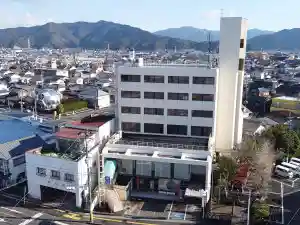
ホテルルートイン佐伯駅前
Hoteruruutoin Saeki Ekimae
ホテル金水苑
Hoteru Kinsui En
ビジネスホテル清風荘
Bijinesuhoteru Seifuu Sou
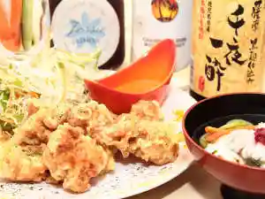
HOTEL AZ 大分佐伯店
Hotel Az Ooita Saeki Mise

渚泊 RENACIDO 浜や
Nagisa Haku Renacido Hama Ya
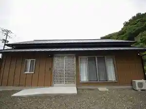
Park and Stay 直川憩の森公園
Park And Stay Naokawa Kei No Mori Kouen
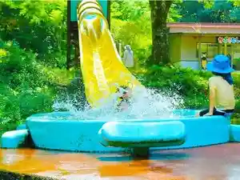
佐伯市うめキャンプ村
Saeki Shi Ume Kyanpu Mura
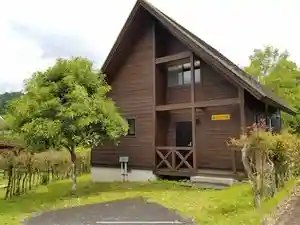